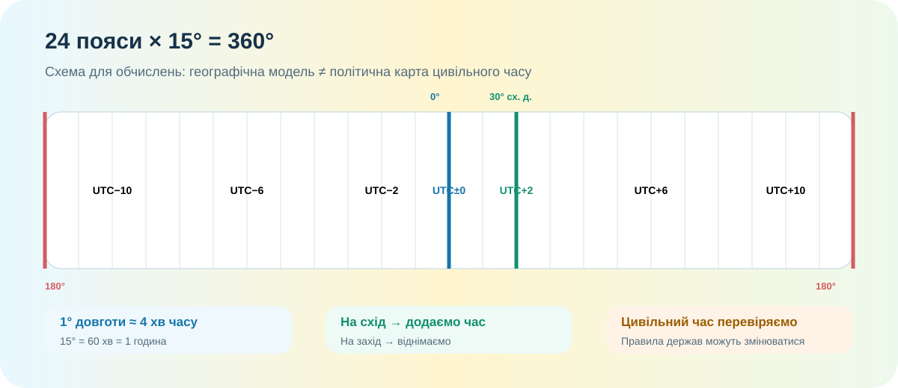

Допуск до часової лабораторії
Робота відкриється після заповнення всіх трьох полів.
Модель, без якої все розсипається

1° = 4 хв часу
Залежить від довготи конкретного меридіана. Якщо між пунктами 8° довготи — різниця місцевого часу становить 8 × 4 = 32 хв.
Для задач працюємо із заданим UTC-зсувом. Він не обчислюється автоматично тільки з довготи держави.
Реальна карта: де саме ми рахуємо?
Якщо Львів приблизно 24° сх. д., а Харків приблизно 36° сх. д., то різниця довгот ≈ 12°. Отже різниця місцевого сонячного часу ≈ 48 хв.
Бо офіційний цивільний час у межах держави уніфікують. Місцевий сонячний час і показ годинника — не те саме.
Практична робота — 10 балів
Станція 1. Місцевий час: Львів → Харків
Для навчальної моделі візьміть: Львів — 24° сх. д., Харків — 36° сх. д. Коли за місцевим сонячним часом у Львові 12:00, котра година у Харкові?
Станція 2. Поясний час: робота з UTC
У пункті А — UTC+2, у пункті Б — UTC+9. У пункті А 08:30. Визначте час у пункті Б.
Станція 3. Перехід через північ
Літак вилітає з міста X (UTC−4) о 22:15. Політ триває 6 год 30 хв. Місто Y має UTC+2. Котра місцева година і яка дата буде в Y під час приземлення?
Станція 4. Маршрут і часовий бюджет
Маршрут Київ → Лондон → Токіо. Для цієї задачі задано: Київ UTC+2, Лондон UTC+0, Токіо UTC+9. Виліт із Києва о 09:00, переліт до Лондона — 3 год 30 хв. Пересадка — 2 год. Лондон → Токіо — 12 год. О котрій годині за токійським часом ви прибудете?
Станція 5. Поясніть, а не вгадайте
Чому не можна за однією лише довготою Києва точно визначити офіційний цивільний час у Києві на будь-яку довільну дату?
Алгоритм мандрівника
Місце, дату, UTC-зсув, час відправлення, тривалість руху.
Від місцевого часу віднімаю UTC-зсув. Так зникає плутанина між поясами.
Контролюю перехід через 00:00 і зміну календарної дати.
До UTC додаю зсув пункту призначення.
Для справжньої подорожі уточнюю чинні правила цивільного часу на конкретну дату.
Рух на схід зазвичай збільшує локальний час; на захід — зменшує.
CER-висновок практикуму
Проблема: «Для подорожей достатньо знати лише часовий пояс країни». Погодьтеся або спростуйте.
§ 5 + одна реальна подорож
Опрацюйте § 5. Оберіть маршрут із України до будь-якого міста світу. Запишіть дату майбутньої поїздки, знайдіть маршрут на карті, визначте різницю часу та поясніть, які дані потрібно перевірити перед реальною поїздкою.
На чому побудована робота
- OpenStreetMap — реальна картографічна основа для пошуку пунктів і порівняння довгот.
- Google Maps — прокладання реального маршруту та оцінка часу в дорозі.
- Локальна навчальна схема часових поясів — для математичної моделі 15°/год.
- КТП 8 класу: практикум на визначення поясного і місцевого часу, робота з маршрутом і картографічними онлайн-сервісами.